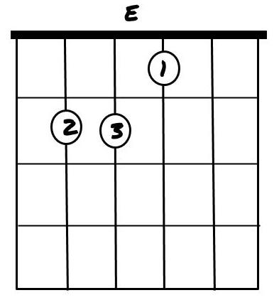
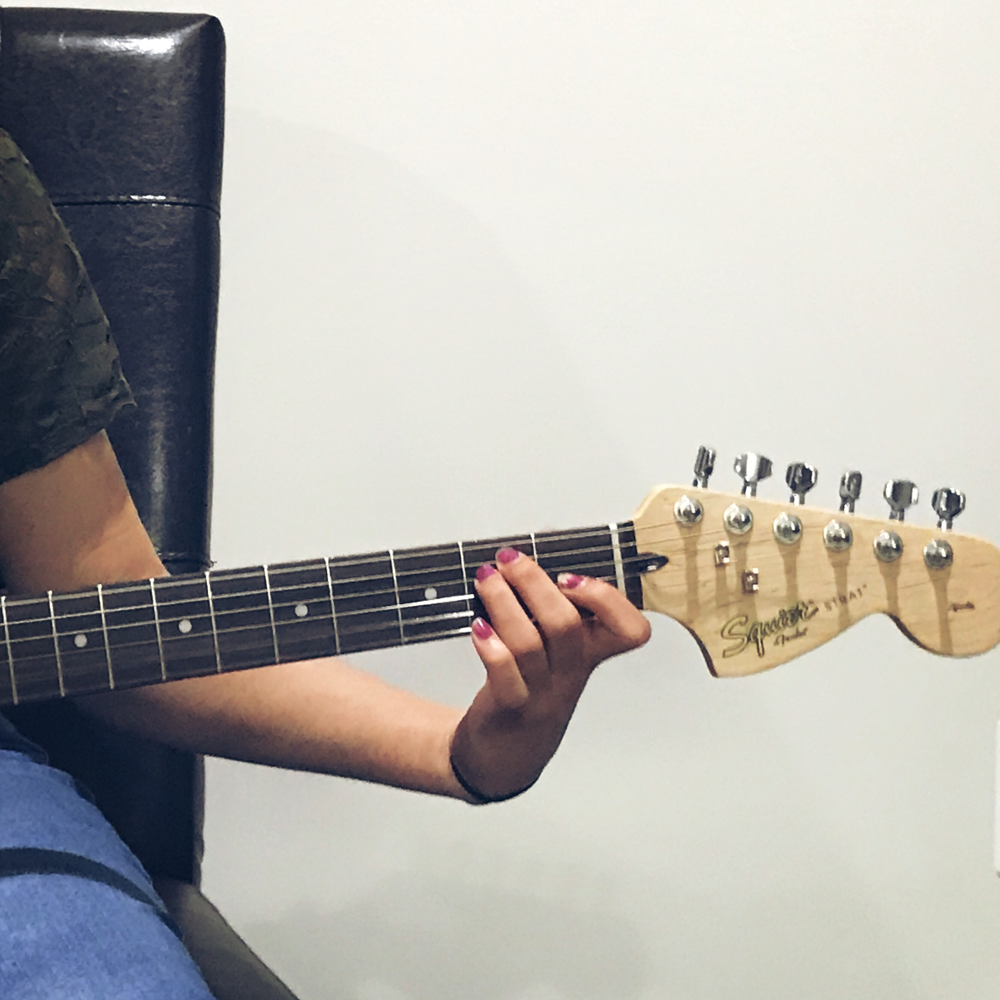
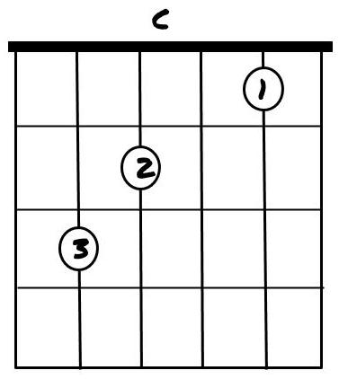
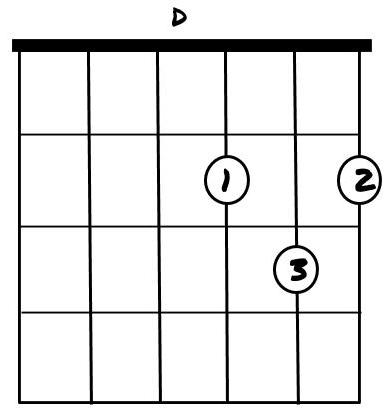
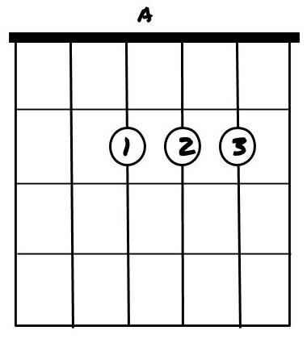
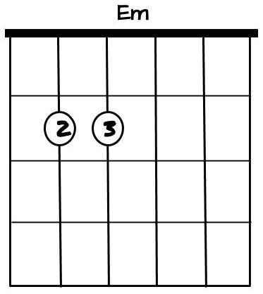
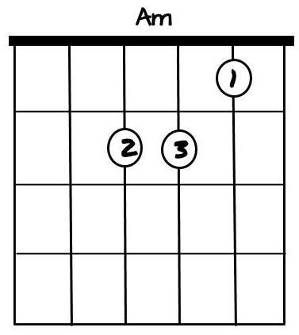
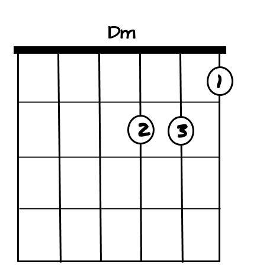

STRUMMING STYLE
There are two main aspects to chord playing... namely your left and right hands. As Martin Guitar cleverly put it, the left hand is "what you know" as your fingers is arranged in a very specific way as dictated by the chord you play. The right hand is "who you are" as the strumming style is a more open ended and slightly subjective decision. You can strum downwards, upwards, slowly, quickly, palm-muted, or even a combination of those. The possibilities are endless.
With you're strumming you can add emotion to your music. Hard and fast strums could indicate it's an "angry" song. Light and fast strumming could indicate it's upbeat and happy. At this point it's important to realize that it's not just the lyrics of the song that portray a message but the music itself too can accomplish that goal.
CAGED CHORDS
Learning chords can be broken down in the acronym, CAGED, and the various categories it can be applied in. CAGED stands quite literally for the chords C,A,G,E and D. These are the most commonly used chord, and you will be seeing them time and time again in some way, shape or form. It's better to get familiar with them now than later!
There are various categories that come with the CAGED model. Firstly you would want to start with learning all the major and minor chords, then move onto the barre, 7ths etc. Knowing the major and minor chords is usually enough to play simplified versions of most songs. However, the more complicated chord arrangements tend to add flavor to the song and can help you achieve the EXACT sound you would want. It is not necessary, but it certainly wouldn't hurt to learn the more difficult chords!
Another advantage of CAGED is that it is music theory friendly. Once you have mastered the major and minor chords, the shapes can be manipulated to create the more complicated and enriched chord arrangements. It will also give you more freedom and allow you to take your music in any direction you want.
Below, you will see more information about the CAGED majors, minors etc.
Major chords tend to be the "happier" chords. The reason for this all has to do with the distance between the notes that make the chord. A greater interval generates brighter seeming sounds. Although this is not always true, most music fits this trend. The major CAGED chords are organized by easier to hardest. All the chords here are triads (created with three notes).
| CHORD | TAB |
ON THE GUITAR |
|---|---|---|
E |
 |
 |
C |
 |
|
D |
 |
|
G |
|
|
A |
 |
|


Minor chords tend to be the sadder chords. The reason for this all has to do with the distance between the notes that make the chord. A smaller interval produces a slightly more melancholic sound. I highly recommend experimenting this with the chords given below as comparing them with the major chords. It's not true for all musical pieces, but the general trend applies.
The minor chords too are arranged from easiest to hardest. Note that Cm and Gm are not mentioned here as they require barring. You will find them along with the rest of the barred chords in the barre chords section. All the minors here are chord triads (created with three notes).
| CHORD | TAB |
ON THE GUITAR |
|---|---|---|
Em |
 |
|
Am |
 |
|
Dm |
 |
|


Sources